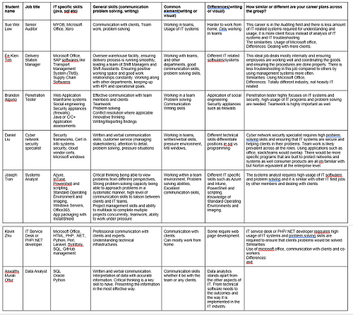

Ideal Jobs
{kind=link}
Click table for larger view
The team has a wide and unique range of career destinations. With different ideas in mind the team members are slowly on a journey to build their skill sets and learn more about their interested career paths. The whole team has one common ground and that is on how to work and co-operate in a team environment. From all IT core careers such as Senior auditor, Data analyst, Penetration tester, Cyber Network Security specialist, System analyst, IT Service desk and PHP/.NET developer to Delivery station manager all the careers have communication and problem solving as their common ground. Across the group there are varied career options chosen not just from the IT industry, though we all have very different career options, planning, implementing, and presenting are key skills that all of us require.
Our options vary in different ways, though we all share a similar ground in teamwork and cooperation, we all have different technical requirements and different skill sets required. One big example is that every career path requires expertise in different languages or usage of different software. Data Analytics requires core knowledge in SQL, Oracle and Python whereas a system Analyst requires skills in Azure, In Tune and PowerShell and a Delivery Station Manager requires skills in SAP software, TMS (Transport management system).
The career options are spread across in various fields (not just in IT). Most of the team members are focused on a career inside the IT field. The career choices are from various aspects of IT, this group work has allowed the team members to discuss and built a knowledge base on the different aspects of the IT field and beyond.